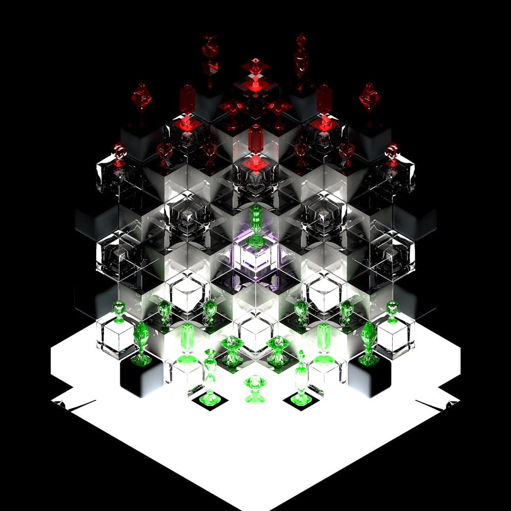
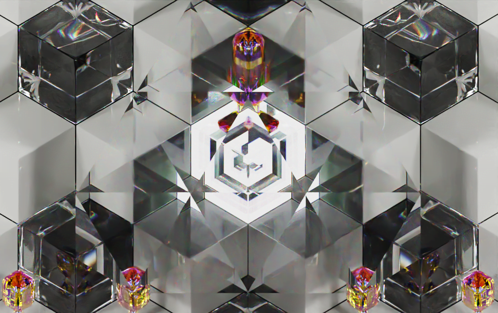
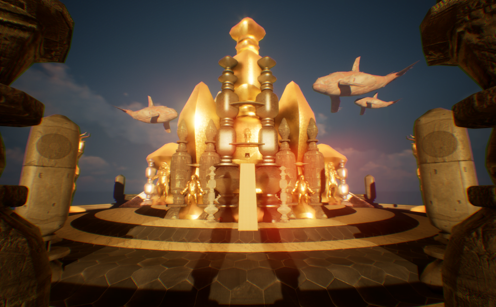
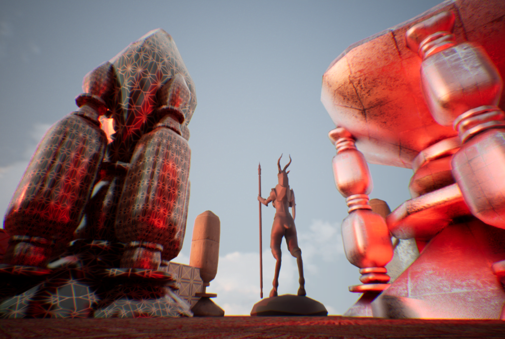
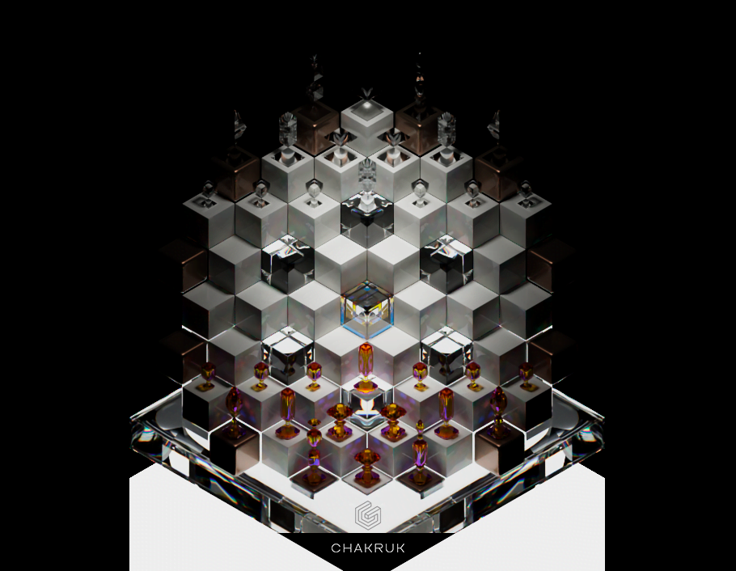

⟨
⟩
Recompensas
¿Qué son?
Son una serie de descuentos y exclusividades que premian tu participación en la venta anticipada.
Para recompensarte por tu interés en el producto te daremos objetos de valor de colección que no estarán disponibles luego de la preventa.
Los descuentos serán de entre el 20% y 50% del valor de salida al mercado.

Chakruk es la unión de 2 palabras claves en la historia del ajedrez. Por un lado Chaturanga, el primero nombre importante con el cuál el juego pasó a ser masivo.
El término chaturanga se acuñó de chatur (que significa ‘cuatro’ en sánscrito) y anga (que significa ‘miembros’), es decir los cuatro miembros que integran un ejército: infantería, caballería, elefantes y carruajes.
Por el otro lado Makruk, se le considera el juego "vivo" más similar al antepasado común de todas las variantes del ajedrez. Así nos introducimos en Chakruk, una propuesta de ajedrez exagonal que lleva la lectura del tablero y las piezas a un nuevo nivel. Y así Chakruk se transforma en la palabra símbolo que comunica la unión entre el pasado y el futuro del mismo juego.

La división del mundo en el año 4444 a.C. definió el futuro del planeta. Fue entonces cuando comenzó la invasión de los humanos.
El desarrollo de la rueda y el uso extendido de la escritura le dió al hombre un poder explosivo. El intelecto y la especulación fueron suficiente para dominar territorios naturales.
Hasta ese momento Los Atlantis habían sido jueces y protectores del equilibrio, guardando los secretos de la comunicación histórica con mucho recelo.
Con la escritura y la rueda el humano comenzó su expansión hacia territorios animales en selvas y mares, desequilibrando los ciclos energéticos del ecosistema planetario.
Los Atlantes dieron ultimátum a los humanos para que retrocedan a sus territorios históricos y actúen con sabiduría. Los humanos, amenazados en sus egos, respondieron con una trampa. Aceptaron retirarse y a cambio de su cese expansivo ofrecieron el primer “caballo de Troya”:
Un grupo selecto de personas sería educado por los atlantes porque, según los humanos “solo con su sabiduría encontrarían la paz”.
Pero éste era un plan en el que aprendieron algo determinante: El alma responde a una motivación divina capaz de ser manipulada por la apariencia. Los signos-símbolos siempre habían existido, pero si sus leyes caían en manos equivocadas inclinarían la balanza.
Los humanos hicieron su jugada y lograron imponer su voluntad sobre los Atlantes resultando en su completa extinción.
Así se originaron las “guerras eternas”, en las que naturaleza y racionalidad combatirían durante 6666 años hasta llegar a esta batalla decisiva.
Los Atlantes, conocedores de las “profecías inminentes”, tenían escondidos los símbolos necesarios para que nuevos seres puedan acceder a su entendimiento gracias a la ingenuidad de sus almas y lo genuino de sus espíritus.
Así, luego de que los humanos hundieran en las profundidades a los Atlantes, ahora, y gracias a la sabiduría de sus ruinas, seres marítimos podrían evolucionar a pasos agigantados.
Seres de conciencia avanzada tomaron el conocimiento y lo utilizaron para equilibrar el mundo. 6666 años pasaron hasta que los animales organizaron su gran batalla. 6666 años hasta que la conciencia de la naturaleza estuviera a la altura del intelecto alcanzado por los hombres.
El Pulpo/Calamar Gigante fué el primero en encontrar y aplicar los conocimientos atlantes. Así, y gracias a sus características distintivas, logró desarrollar su propia civilización lejos de la mirada humana. Paciente, desarrolló un sistema de conocimiento heredado que habita en su información genética.
LA CREACIÓN DEL UNIVERSO
Infinito es lo que siempre ha sido y siempre va a ser. La creación siempre fue creada y será creada nuevamente por siempre.
Pero los universos no siempre fueron los mismos:
Cuando el demiurgo creó nuestro universo lo hizo a imagen y semejanza del que lo había creado a él. Y así se creó a sí mismo en un nuevo universo.
Sus creaciones terminarían siendo creadores. Pero la historia que contarían será única. Otra vez.
Porque el demiurgo venera a sus dioses y al mismo tiempo sus dioses a los propios.
LA CREACIÓN DEL MUNDO
Para crear la creación era necesario otorgar sentido, y para dar sentido todos los sistemas se basaron en la geometría. Los mundos serían sistemas geométricos que danzarían entre sí para alcanzar el sentido.
Para ello cada esfera autónoma será alimentada con la energía de una estrella, la cual dará la información necesaria para que las historias geométricas alcancen el milagro o “paisaje sagrado”.
A cambio cada sistema geométrico devolverá al universo energía en forma de historias hermosas, historias que alcancen el sentido y luego creen nuevos universos.
LA CREACIÓN DEL CREADOR
El creador solo podrá ser capaz de crear universos creadores si posee la geometría necesaria para hacerlo.
Y él fue la medida del universo. Porque su geometría explicaba a todas las otras geometrías. Porque fue uno con todos sus espejos.
Pero él también era el destructor. Porque la geometría sin el propósito rompía el sentido.
Y los mundos tienen otros creadores dotados de sentido.
LOS ANIMALES
Los animales fueron las creaciones creadoras de 3er nivel luego de los paisajes sagrados y las semillas.
Ellos comprendían las primeras 9 geometrías.
Sus sistemas de memorias heredadas predestinaban una ampliación de conciencia hacia el TODO con un ritmo de crecimiento equilibrado y paciente proveniente desde el centro de la tierra.
Los animales siempre fueron uno con la tierra.
LOS ATLANTES
Nacieron de la geometría de los cristales. La luz y la gravedad generaron belleza y ésta entornos y paisajes sagrados.
Inherente a los atlantes era su paisaje y civilización arquitectónica, pero más que nada lo eran los mensajes atemporales en sus estructuras. Mensajes que educaban y recordaban la eternidad del tiempo.
Su conocimiento mezclaba de forma equilibrada la sabiduría del cosmos y de las profundidades de la tierra.
Llegaron a saber todo. A ser felices por todo. Vivían en eternidad con el presente.
LOS HUMANOS
Los humanos fueron la creación posterior a los animales.
Ellos trascendieron la geometría racional e incorporaron el concepto de infinito a través de la composición fractal de sus cuerpos.
Los humanos nacieron sin este conocimiento, por lo que dedicaban sus vidas a comprenderlo.
LA GUERRA
Atlantes y animales se unirán para salvarse de la masacre desenfrenada de los humanos.
Los atlantes conocedores de la eternidad de las historias dejaron la lucha en manos de los animales para que cuando llegue el momento tomen la iniciativa y apliquen la inteligencia eterna.
6666 años de holocausto.
¿Serán ajusticiados?
| URUK |
Pulpo/Calamar Gigante de mil años comanda las 12 direcciones. Sus conocimientos le permiten dirigir estrategias que fluyen como música.
Rol: Mente maestra. Idea el plan a largo plazo.
Habilidad: Coordina ataques simultaneos.
Poder: Da habilidad a los soldados que lo acompañan : Da 2 movimientos a 1 soldado si hay 3 juntos.
Debilidad: Pieza que determina el juego. Su exposición es peligrosa y su muerte determinante.
VALOR por unidad = 9
VALOR en terreno = 9
| ANANSI |
La Araña es su aliada en tierra. Ella es la segunda al mando pero la más mortífera en el campo.
Rol: Ejecuta la masacre.
Habilidad: 8 direcciones sin límite de alcance.
Poder: Renace desde el centro.
Debilidad: Es débil contra el Sacred Knight y el Rey.
VALOR por unidad = 15
VALOR en terreno = 15
| MANSON |
Su mejor amigo, el Espalda Plateada, dirige las defensas. El Gorila de mil años es el más fuerte defensor de las murallas, motivando a las primeras líneas para que resistan,
Rol: Jefe de defensa.
Habilidad: Alto alcance.
Poder: Hace invunerables las defensas <con 3 cabríos en su rango crea una pared y queda inmóvil>.
Debilidad: Poca cantidad de ellos en el terreno.
VALOR por unidad = 9
VALOR en terreno = 18
| MUJICA |
El León, Sacred Knight, es el lider de las primeras lineas, tiene la habilidad de moverse por un plano diferente de conciencia, el guerrero elegido puede mirar más allá y moverse por la conciencia sagrada.
Rol: Jefe de Ataque -Líder natural.
Habilidad: Mueve exagonalmente. Su patrón es único.
Poder: Puede transportar otras piezas.
Debilidad: No ataca piezas continuas.
VALOR por unidad = 6
VALOR en terreno = 18
*unidad central vale 7
| SHUNG |
El lobo es primordial en el campo de batalla porque es el maestro espiritual natural del grupo y al mismo tiempo es un guerrero sagrado.
Rol: Chaman/ Guerrero sagrado.
Habilidad: Eleva la moral del grupo.
Poder: Permite al soldado propio moverse como él si está en su rango.
Debilidad: Poca movilidad en el terreno.
VALOR por unidad = 6
VALOR en terreno = 18
| PHILIP NEGRO |
Los cabríos son las unidades de primera línea , una especie leal y valerosa que durante los 6666 años han sido el sacrificio preferido de los humanos.
Rol: Soldado Leal.
Habilidad: En equipo es muy poderoso.
Poder: Se combina con todas las piezas.
Debilidad: Poco alcance. Solo captura y mueve hacia adelante.
VALOR por unidad = 3
VALOR en terreno = 18
| TELSON MUSK |
Los humanos están liderados por el hombre más inteligente, creador de las últimas tecnologías/armas y lider intelecual de los movimientos militares.
Rol: Lider mental - Científico y diseñador/programador.
Habilidad: Genera sincronicidad en los movimientos de las máquinas.
Poder: Da 2 movimientos en un turno a 3 soldados alineados.
Debilidad: Si muere se caen todos los sistemas.
VALOR por unidad = 9
VALOR en terreno = 9
| THATCHER |
La Emperatriz, capaz de moverse por todo el terreno es la encargada de apoyar al ejército e infiltrarse en las líneas.
Rol: Líder de ejecución de ataque.
Habilidad: Gran control del terreno y distancia.
Poder: Mueve en las 6 direcciones sin límite de alcance.
Debilidad: Los caballeros estan fuera de su alcance.
VALOR por unidad = 15
VALOR en terreno = 15
| TANKREX |
El jefe de la defensa la asumía la figura del Mech Raptor, el arma de largo alcance más efectiva jamás construida. Al mismo tiempo su coraza le permitía resistir lo más duros ataques.
Rol: Jefe de defensa.
Habilidad: Puede atacar a distancia y puede defender.
Poder: Hace invunerables las defensas <entre 3 peones crea una pared>.
Debilidad:: Poca cantidad de ellos sobre el terreno.
VALOR por unidad = 9
VALOR en terreno = 18
| DIAMONDBUSTER |
El liderazgo de los soldados era comandado por este Mech, quién podía ver más allá en el terreno y lograr penetrar las defensas enemigas con mayor habilidad.
Rol: General del ataque-Líder natural.
Habilidad: Mueve en piezas a 30 grados formando exágonos y se mantiene en su color.
Poder: Puede cargar a un soldado con él y transportarlo.
Debilidad: No puede atacar a los enemigos cercanos.
VALOR por unidad = 6
VALOR en terreno = 18
| FRANCIS |
El Bishop Pope es el lider espiritual de los humanos, entregando a todos los miembros sabiduría para trascender lo habitual.
Rol: Maestro espiritual/ Guerrero.
Habilidad: Eleva la moral del grupo.
Poder: Permite al soldado propio moverse como él si está en su rango.
Debilidad:: Poca movilidad en el terreno.
VALOR por unidad = 6
VALOR en terreno = 18
| MAT RYAN |
La primera línea es compuesta por Drones, diseñados por la mente maestra, obedecen órdenes sin titubear y apoyan al resto de los generales en todas sus deciciones.
Rol: Soldado Leal.
Habilidad: En equipo es muy poderoso.
Poder: Se combina con todas las piezas.
Debilidad: Poco alcance. Solo captura hacia adelante.
VALOR por unidad = 3
VALOR en terreno = 18
Tanto el tablero como las piezas del juego están basados en geometría sagrada.
Esto quiere decir que su lógica es permanente, eterna y basada en los principios más básicos de la lógica geométrica.
Cada uno de los pasos para construir la complejidad de la geometría se conecta a la complejidad propia de la proporción humana y con esto a la creación de espacios habitables de resonancia armónica con el universo y la vida.
Los secretos de esta sabiduría ancestral contienen también el poder y la gloria de una cosmovisión completa.
Esta será desafiada por subsiguientes cosmovisiones obligando a la primera a estar preparada para defenderse.
